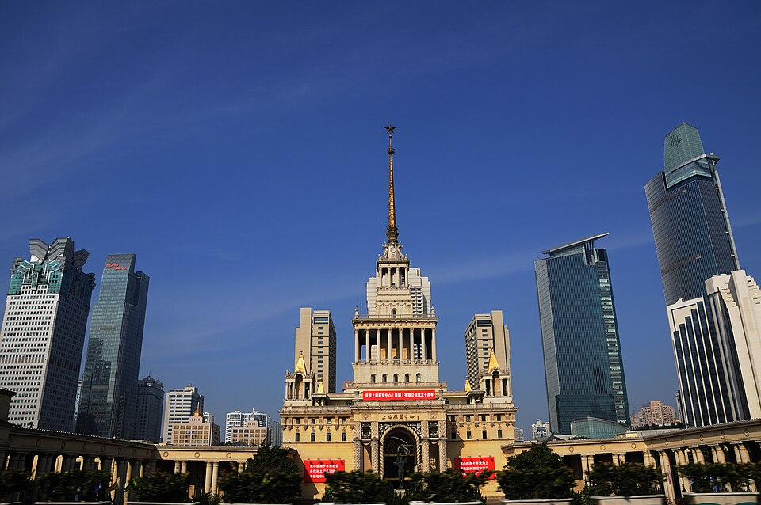

Остановка 4. Не путать с лётчиками
第4站。别跟飞行员混在一起
1955. Дом дружбы1955。友好大厦
Яньань-роуд, дом 1000. Шанхайский выставочный центр.
延安中路1000号，上海展览中心。

Прочитать за минуту一分钟读完
Шанхайский выставочный центр стоит на Яньань-роуд, дом 1000. Его построили в 1955 году как Дом советско-китайской дружбы. С 15 марта по 15 мая 1955 года внутри шла выставка советской промышленности. Выставки в этом доме идут до сих пор.
上海展览中心在延安中路1000号。1955年盖的，当时叫中苏友好大厦。1955年3月15日到5月15日，里面是苏联工业展览。这个房子现在还在办展览。
Узнать подробнее了解更多
К лётчикам он не относится. Я держу его на карте только потому, что это тоже 1950-е, и их легко склеить. Над входом когда-то были буквы «СССР». Перед дверью стояла скульптура: советский и китайский рабочие вместе поднимают звезду.
Дружба двух стран, и только. К аэродрому и к штабу Батицкого этот дом не привязан.
它跟飞行员无关。我把它留在地图上，只因为也是1950年代，很容易粘成一个故事。门口上方曾经有“苏联”的俄文字母。门前有一座雕塑：苏联工人和中国工人一起举起一颗星。
这是友好的房子，不是机场，也不是防空司令部。
На карте在地图上
Важно не перепутать别弄混
Этот дом не про лётчиков, не про аэродром и не про штаб Батицкого. Его легко склеить с 1950 годом только потому, что оба сюжета из 1950-х.
这栋房子不是飞行员，不是机场，也不是巴季茨基的司令部。会把它和1950年粘在一起，只因为都是1950年代。
Вопрос для школьника给同学的问题
Почему Дом дружбы нельзя ставить в один рассказ с лётчиками 1950 года?
为什么友好大厦不能和1950年的飞行员讲成一个故事？
Что установлено точно已经核对过的
Адрес, 1955 год, старое имя дома и даты выставки с 15 марта по 15 мая 1955 года. Страница сверки ниже.
地址、1955年、房子的旧名，还有1955年3月15日到5月15日的展览。核对页在下面。
Что пока требует проверки还要再核对的
Надпись «СССР» и скульптуру у двери я передаю как то, что было на доме. Своего фото с тротуара ещё нет.
门口曾经的「苏联」字和雕像，我按资料里写过的来说。人行道上我自己的照片还没有。
Источники этой страницы这一页的出处
- Building Russian Shanghai, дом дружбы. Выставка с 15 марта по 15 мая 1955 года. Это взрослый справочник зданий. Карту для класса я с него не списывала.展览从1955年3月15日到5月15日。这是大人写的建筑资料。给班级的地图不是从那儿抄来的。
Учебный маршрут: 1955: Дом советско-китайской дружбы课堂路线：1955：中苏友好大厦
Рядом по смыслу:意思上相邻的： 1950. Небо Шанхая1950。上海的天空
Последняя правка страницы: 30 октября 2026. Это дата правки сайта, не дата исторического события.本页最近一次修改：2026年10月30日。这是网页的修改日期，不是历史事件的日期。